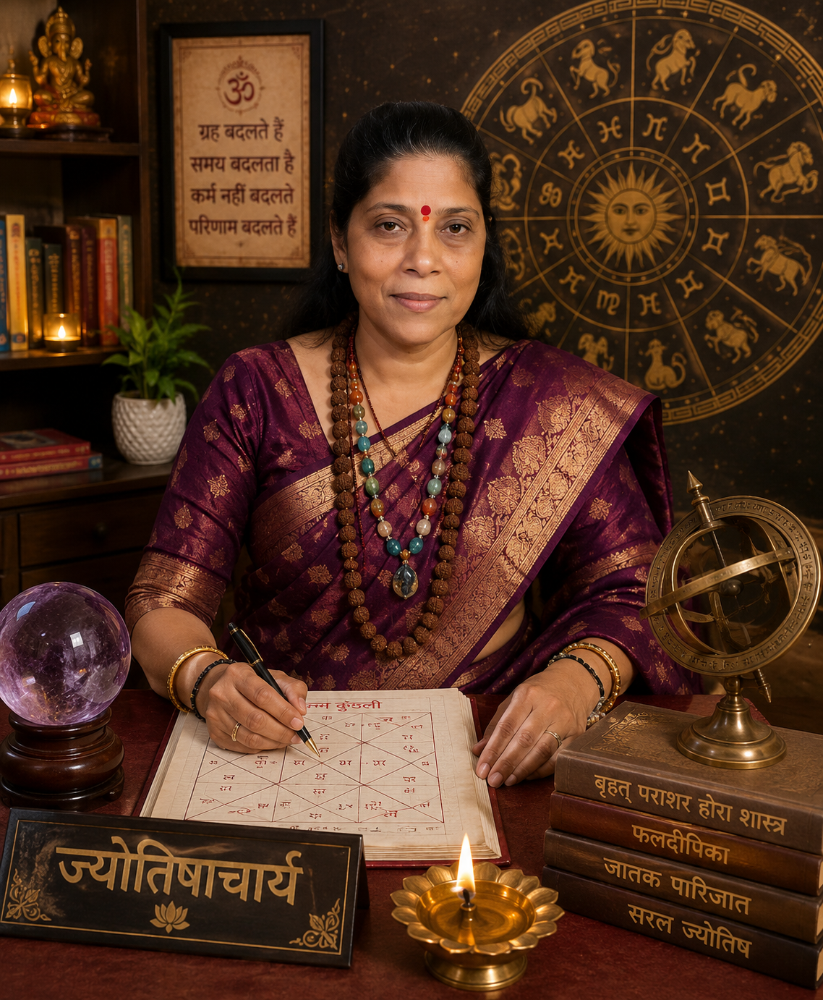

Our Astrologer
Guided by experience, intuition & compassion

Mala Singh
वरिष्ठ ज्योतिषाचार्य | हस्तरेखा विशेषज्ञ | मुखाकृति विशेषज्ञ | आध्यात्मिक मार्गदर्शक
माला सिंह एक समर्पित एवं अनुभवी ज्योतिषाचार्य हैं, जिन्हें वैदिक ज्योतिष, हस्तरेखा विज्ञान (Palmistry), मुखाकृति विज्ञान (Face Reading) तथा आध्यात्मिक मार्गदर्शन में विशेष दक्षता प्राप्त है। उनका उद्देश्य लोगों को जीवन के महत्वपूर्ण निर्णयों में स्पष्टता, आत्मविश्वास और सकारात्मक दिशा प्रदान करना है।.
पारंपरिक ज्योतिषीय ज्ञान और आध्यात्मिक अनुभव के आधार पर वे प्रत्येक व्यक्ति की परिस्थितियों को समझते हुए व्यक्तिगत परामर्श प्रदान करती हैं। उनके मार्गदर्शन का उद्देश्य जीवन में संतुलन, आत्मचिंतन और सकारात्मक सोच को बढ़ावा देना है।
वे प्रेम, विवाह, करियर, व्यवसाय, आर्थिक उन्नति, पारिवारिक जीवन तथा व्यक्तिगत विकास जैसे विभिन्न विषयों पर ज्योतिषीय परामर्श एवं आध्यात्मिक मार्गदर्शन प्रदान करती हैं।
- वैदिक ज्योतिष परामर्श
- हस्तरेखा विश्लेषण (Palm Reading)
- मुखाकृति विश्लेषण (Face Reading)
- आध्यात्मिक एवं अंतर्ज्ञान आधारित मार्गदर्शन
- प्रेम एवं वैवाहिक जीवन परामर्श
- धन, समृद्धि एवं आर्थिक परामर्श
- पारिवारिक एवं व्यक्तिगत जीवन मार्गदर्शन
- जीवन-पथ एवं आत्म-विकास परामर्श
- आध्यात्मिक परामर्श एवं सकारात्मक जीवन मार्गदर्शन